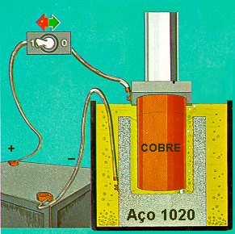
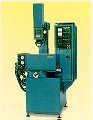

LMP>Linhas de Pesquisa>PROCESP>Análise do Desgaste de Canto Vivo em Eletrodos de Cobre na Eletroerosão por Faísca
OBJETIVOSEstudar o comportamento do desgaste de canto vivo em eletrodos de cobre, sob condições preestabelecidas de desbaste e acabamento, na eletroerosão por faísca. PROCEDIMENTOSNuma máquina de eletroerosão de penetração (modelo
ENGEMAQ EDM 200), são realizados ensaios em corpos de prova de aço
SAE 1020, utilizando-se eletrodos-ferramenta em cobre eletrolítico.  Para cada conjunto de parâmetros, a verificação e avaliação do desgaste do eletrodo é realizada periodicamente, à medida que o eletrodo avança contra a cavidade, através de uma câmera digital, que transmite a imagem, com aumento desejado, da região a ser observada, diretamente a um computador. A imagem obtida é capturada por um software de aquisição,
permitindo que a mesma seja manipulada. RESULTADOSSão traçadas curvas de comportamento, que relacionam os parâmetros
de entrada e a progressão do raio de arredondamento medido nas cavidades
produzidas, parâmetro utilizado como referencial para a medida do desgaste
do canto vivo.  |
| Contato: PROCESP Walter Lindolfo Weingaertner Prof. Dr.-Ing |
Última Atualização 23.06.2006 |